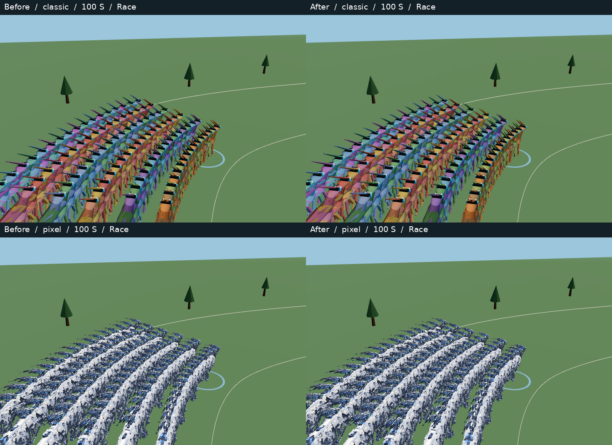
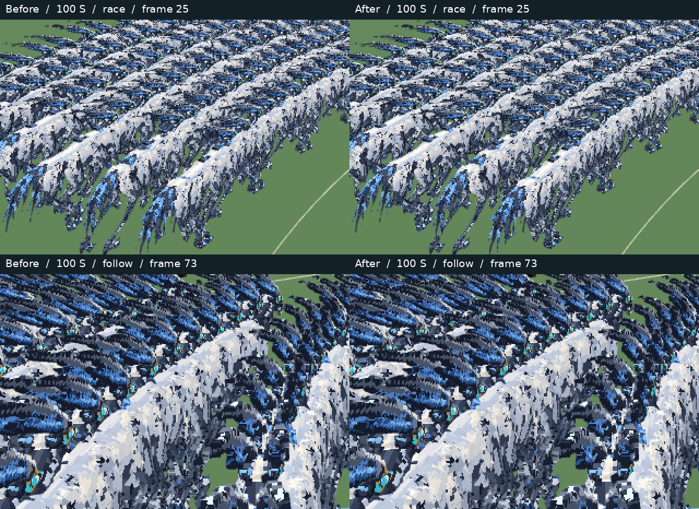
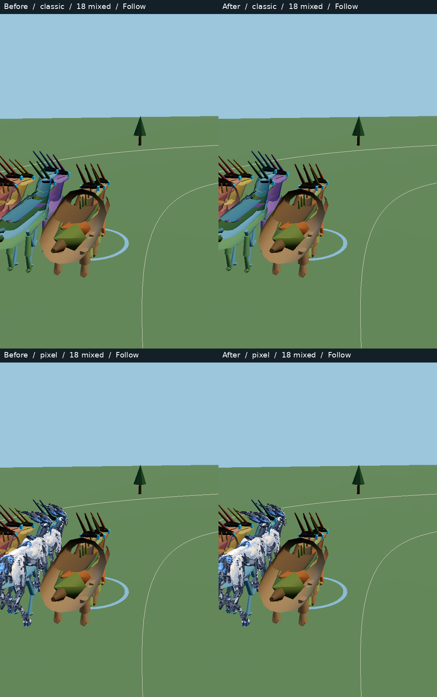
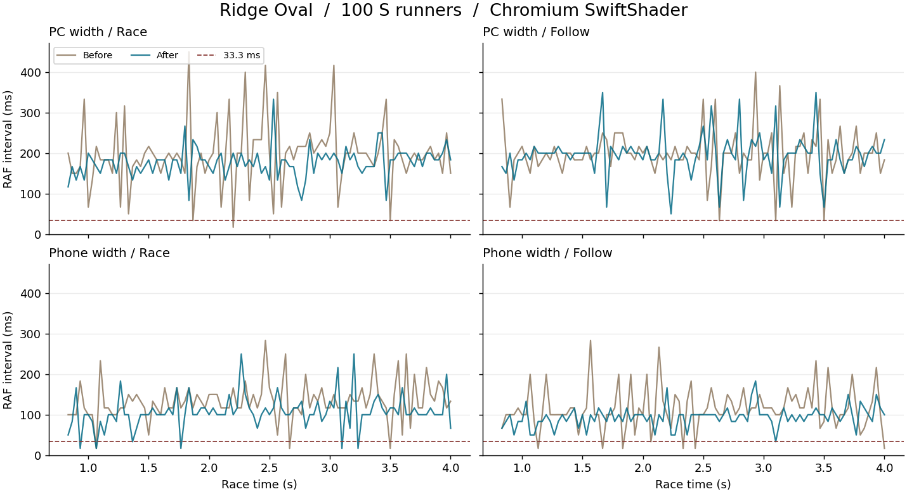

REVISE Chromium / ANGLE SwiftShaderによる採用試験。目標は平均30 FPS以上・p95 33.3 ms以下。物理GPU搭載PCとAndroid実機は未測定。
各画像の左が開始HEAD、右が改修後。同じレース時刻・カメラ・出走編成で比較した。168組の全個体状態・提出ID・姿勢・LODが一致。個体画像の前景マスク差は0画素。



1条件につき24フレーム予熱後の96実RAF。PCは736×500・AA有、スマホ幅は561×859・AA無。同条件の平均FPSとp95を左右に表示する。

| 編成 | カメラ | 表示 | 前 FPS | 前 p95 ms | 後 FPS | 後 p95 ms |
|---|---|---|---|---|---|---|
| 18体混走 | Race | 従来 | 7.62 | 166.70 | 9.78 | 149.90 |
| 18体混走 | Race | ピクセル | 8.29 | 166.70 | 10.14 | 116.70 |
| 18体混走 | Follow | 従来 | 6.98 | 183.40 | 8.77 | 166.60 |
| 18体混走 | Follow | ピクセル | 7.66 | 166.70 | 9.16 | 166.80 |
| S型50体 | Race | 従来 | 4.51 | 266.70 | 5.65 | 216.70 |
| S型50体 | Race | ピクセル | 6.91 | 200.00 | 8.19 | 183.40 |
| S型50体 | Follow | 従来 | 4.71 | 283.20 | 5.88 | 200.10 |
| S型50体 | Follow | ピクセル | 5.82 | 216.60 | 6.25 | 216.70 |
| S型100体 | Race | 従来 | 3.23 | 366.70 | 3.08 | 383.30 |
| S型100体 | Race | ピクセル | 5.08 | 350.00 | 5.65 | 233.30 |
| S型100体 | Follow | 従来 | 4.70 | 300.00 | 4.55 | 283.40 |
| S型100体 | Follow | ピクセル | 5.05 | 333.30 | 5.09 | 316.70 |
| 編成 | カメラ | 表示 | 前 FPS | 前 p95 ms | 後 FPS | 後 p95 ms |
|---|---|---|---|---|---|---|
| 18体混走 | Race | 従来 | 10.59 | 133.30 | 13.18 | 100.00 |
| 18体混走 | Race | ピクセル | 11.21 | 116.80 | 15.00 | 83.40 |
| 18体混走 | Follow | 従来 | 13.46 | 116.70 | 18.95 | 100.00 |
| 18体混走 | Follow | ピクセル | 14.51 | 116.60 | 19.27 | 83.40 |
| S型50体 | Race | 従来 | 6.23 | 200.00 | 6.72 | 183.40 |
| S型50体 | Race | ピクセル | 9.26 | 183.40 | 11.64 | 116.70 |
| S型50体 | Follow | 従来 | 9.16 | 166.60 | 10.25 | 133.30 |
| S型50体 | Follow | ピクセル | 11.43 | 166.60 | 13.85 | 116.60 |
| S型100体 | Race | 従来 | 4.36 | 283.30 | 5.27 | 233.30 |
| S型100体 | Race | ピクセル | 7.44 | 233.30 | 9.31 | 183.40 |
| S型100体 | Follow | 従来 | 6.32 | 233.30 | 6.59 | 200.00 |
| S型100体 | Follow | ピクセル | 8.66 | 216.60 | 10.61 | 150.00 |
ゲームの「出走設定」で編成を選び、「新しいレース」を押す。RaceまたはFollowを選び、「実機計測」で端末名を入力して96フレームを測定する。終了後にJSONを保存する。同じ端末・画面向きで従来表示とピクセル表示を交互に各3回測り、JSON比較画面で平均とp95を確認する。